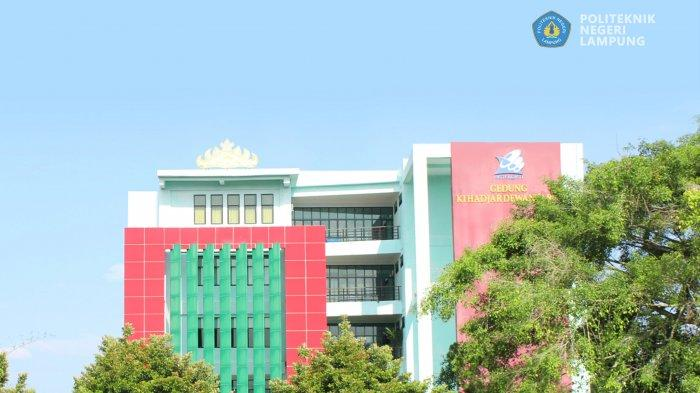

Profile
.jpg)
Politeknik Negeri Lampung pada awalnya dikenal dengan nama Politeknik Pertanian Negeri Lampung dan resmi menyelenggarakan pendidikan tinggi secara mandiri dan menjadi salah satu bentuk Perguruan Tinggi Negeri (PTN) di Provinsi Lampung sejak tanggal 7 April 2001, berdasarkan SK. Mendiknas RI No. 036/O/2001.
Selain sebagai penyelenggara kegiatan pendidikan tinggi, keberadaan Politeknik di era otonomi daerah diharapkan dapat berperan sebagai motivator, dinamisator dan akselerator pembangunan daerah. Dalam kaitan tersebut Politeknik terus melakukan pengembangan aktivitas dan fasilitas akademik dengan memperluas penyelenggaraan bidang studi guna mencetak tenaga professional di sejumlah bidang pengetahuan khusus. Sejak 2 Agustus 2004 Politeknik Pertanian Negeri Lampung resmi berubah nama menjadi Politeknik Negeri Lampung, hal ini di karenakan rencana pengembangan Politeknik yang di masa datang dimana bidang studi yang di selenggarakan tidak lagi hanya di bidang pertanian.
Politeknik mempunyai filosofi adalah sebagai berikut : 1 Keterkaitan dan kesepadanan antara kurikulum dan kebutuhan industri yang berorientasi kepada kepuasan pelanggan (customer satisfactory). 2 Penyelenggarakan pendidikan berbasis kompetensi. 3 Peningkatan kualitas secara berkelanjutan (continuous quality improvment). 4 Belajar dengan melakukan (learning by doing). 5 Pengembangan organisasi dan manajemen modern yang berorientasi pada mutu, profesionalisme dan keterbukaan serta mampu bersiang secara nasional maupun regional. dan 6 Profesional dan berakhlak mulia.
Sejarah

Politeknik Pertanian Negeri di Propinsi Lampung ini resmi terbentuk dengan diterbitkannya SK. Dirjen Dikti Depdikbud No.14/Dikti/Kep/1984, tanggal 7 April 1984 tentang Pembentukan Politeknik Pertanian Universitas Lampung. Kemudian dalam rangka mempersiapkan pengembangan Politeknik Pertanian, yang meliputi pengembangan fisik kampus, tenaga pengajar, dan pengembangan kurikulum, maka pada tanggal 3 Desember 1985, melalui SK. Dirjen Dikti Depdikbud No.79/Dikti/Kep/1985, dibentuk Penanggung Jawab Unit Pelaksana Proyek pada Proyek Pengembangan Pendidikan Politeknik Pertanian Universitas Lampung.
Pada tanggal 3 Nopember 1988 Politeknik Pertanian Universitas Lampung menempati kampus baru di Jalan Soekarno-Hatta, Rajabasa, Bandar Lampung, dan pada tanggal 15 Desember 1988 Penanggungjawab Pengembangan Politeknik Pertanian Negeri Lampung dilantik oleh Rektor Universitas Lampung. Pada tanggal 7 April 2001, berdasarkan SK. Mendiknas RI No. 036/O/2001 tentang Pendirian Politeknik Pertanian Negeri Bandar Lampung, Politeknik Pertanian Negeri Lampung resmi mandiri menjadi salah satu bentuk Perguruan Tinggi Negeri (PTN) di Propinsi Lampung dengan nama Politeknik Pertanian Negeri Bandar Lampung.
Berdasarkan rapat Senat Politeknik tanggal 19 Oktober 2002 telah ditetapkan perubahan nama Politeknik menjadi Politeknik Negeri Lampung. Kemudian, berdasarkan surat keputusan Menteri Pendidikan Nasional Nomor : 092/O/2004 tanggal 2 Agustus 2004, Politeknik Pertanian Negeri Bandar Lampung resmi berubah nama menjadi Politeknik Negeri Lampung (Polinela)..
Jurusan Ekonomi dan Bisnis
Jurusan Ekonomi dan bisnis merupakan salah satu jurusan terbesar atau jurusan yang memiliki banyak program studi. Pada tahun 2023 ini Jurusan Ekonomi dan Bisnis menambah Program Studi baru Yaiut:
Teknolig Rekayasa Perangkat Lunak

Mempersiapkan sarjana terapan bidang pengembangan perangkat lunak yang memiliki kemampuan analisis, desain, perancangan, validasi, pengembangan (pemrograman), penjaminan kualitas, dan keamanan perangkat lunak (software) serta pemanfaatan multimedia untuk menghasilkan karya teknologi yang dapat berfungsi secara efektif dan efisien.
Teknologi Rekayasa Internet

program studi di bidang teknologi informasi yang mempelajari tentang teknologi yang digunakan untuk mengembangkan dan mengelola sistem internet yang meliputi Infrastrktur Internet, Sistem Keamanan Internet, Aplikasi dan Layanan Internet.